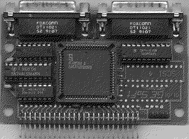

Previous
Next
TOC
Die SCSI Hostadapter der Fa. GE-Soft
Die GE-Soft Hostadapter I - III sind nicht mehr im Handel erhältlich.
ESDI Laufwerke konnten mit einem speziellen Controller (damals
520.- DM teuer) an den Atari angeschlossen werden. Dieser Control-
ler ist auch nicht mehr erhältlich.
Falls der MEGADRIVE CONTROLLER vor Februar 1990 gekauft wurde, so
kann es bei bestimmten ATARI ST-Modellen vorkommen, daß bei nicht
angeschalteter Festplatte, die an den ATARI ST per DMA-Kabel ange-
schlossen ist, die Ikons der Floppys nach dem Boot nicht erschei-
nen. In diesem Fall muß ein Chip des MEGADRIVE CONTROLLER's ausge-
tauscht werden. Ersetzen Sie bitte den Chip HCT 640 durch den Chip
LS 640 (mit geringerem Stromverbrauch).
Der GE-Soft Hostadapter IV ist nicht Terminiert, erzeugt kein Pari-
tätssignal (Paritychecking) und verfügt über einen gepufferten ACSI
DMA Out auf der Platine. Spannungsversorgung erfolgt entweder über
den 2 bzw. 4 poligen Steckplatz neben der SCSI Stiftleiste mit +5
Volt (bei 380 mA Stromaufnahme) oder über den Pin 26 (Termpower)
des SCSI Busses.

Der GE-Soft Hostadapter V ist nicht Terminiert, generiert das Pari-
tätssignal (Paritychecking) und verfügt über einen gepufferten ACSI
DMA Out auf der Platine.
Der GE-Soft Hostadapter VI (Toplink) ist nicht Terminiert, generiert
ebenfalls das Paritätssignal (Paritychecking) und verfügt (prinzip-
bedingt) NICHT über einen ACSI-DMA Ausgang.
Er muß über Pin 26 (Termpwr) des SCSI Busses gespeist werden
Anmerkung: Die GE Soft Kontroller können keine CLASS-2-Kommandos
verschicken, man kann es zwar mit Linked-Commands probieren aber
jetzt kommt es auf die angeschlossenen SCSI Geräte (z.b. CD ROMs)
an, ob die Linked-Commands vom Kommandosatz her unterstützen.
weiterblättern
Kapitel Die SCSI Hostadapter der Fa. GE-Soft, Seite 1